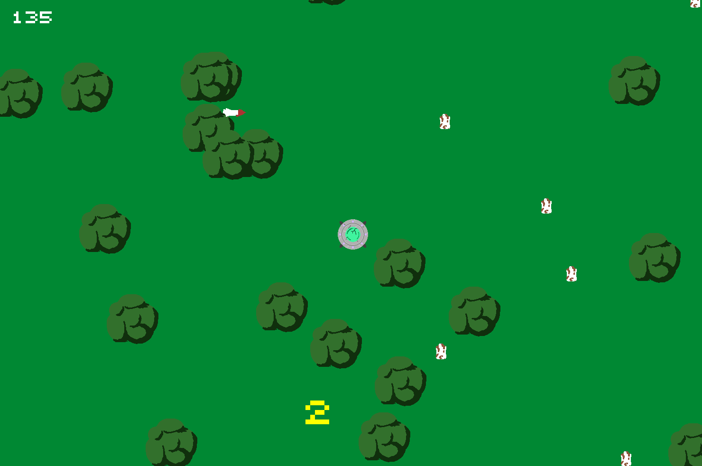

Cow Abductor
A top-down arcade game built without the use of a game engine.
Overview
Cow Abductor is an arcade game built in C++ using the barebones Tmpl8 2026 framework, submitted as my intake assignment for BUas CMGT.

My first C++ project
This project was my first ever exposure to C++ and engine-less gamedev, and the transition from C# and Unity took some time. Worrying about memory management, circular dependencies, and the complete lack of engine tooling made every new system a labour of love, but at the same time the newfound level of control and ownership over my game was gratifying.
The GameObject system
Instead of opting for a deep inheritance hierarchy, I drew on my familiarity with Unity to design a composition-based system, where a gameObject's behaviour is defined almost entirely by the components it owns.
class GameObject
{
public:
template <typename T, typename... Args>
T& AddComponent(Args&&... args)
{
auto comp = std::make_unique<T>(std::forward<Args>(args)...);
comp->gameObject = this;
T& ref = *comp;
components.push_back(std::move(comp));
return ref;
}
template <typename T> T* GetComponent()
{
for (const auto& component : components)
{
T* ptr = dynamic_cast<T*>(component.get());
if (ptr) return ptr;
}
return nullptr;
}
private:
std::vector<std::unique_ptr<Component>> components;
}
The base GameObject class is a skeleton, containing only a vector2 position,
component-handling logic, and members for lifecycle and debugging.
At the core of this is the AddComponent() function,
which uses variadic templates to pass any number of Component constructor
arguments through a single Args... parameter pack.
Sprite factory system
The Tmpl8 library provides a Sprite class that takes a
file location and frame count in its constructor. However, I wanted to be
able to pass my SpriteRenderer component a sprite directly, without having
to worry about the sprite's properties. Initially, I passed the SpriteRenderer
a raw pointer to a pre-existing sprite object, but this meant that all gameObjects with the same sprite
also shared the actual sprite object, making it impossible to handle animations correctly.
To fix this, I utilized the factory pattern. I created a SpriteFactory class that
held an unordered_map that took a sprite name as its key (e.g: "tree")
and returned a struct that held the corresponding constructor arguments (e.g: "assets/tree.png", 6).
A static BuildSprite() function took a key as its parameter, and used the data
it returned to construct a new sprite using std::make_unique(). The SpriteRenderer
took this std::unique_ptr and transferred ownership of it to itself using the std::move() function.
SpriteFactory::SpriteInfo ufoInfo = { "assets/ufo.png", 3 };
SpriteFactory::SpriteInfo treeInfo = { "assets/tree.png", 1 };
unordered_map<string, SpriteFactory::SpriteInfo*> SpriteFactory::sprites =
{
{ "ufo", &ufoInfo },
{ "tree", &treeInfo },
};
unique_ptr<Sprite> SpriteFactory::BuildSprite(string spriteName)
{
auto info = sprites[spriteName];
return make_unique<Sprite>(new Surface(info->address.c_str()), info->frameCount);
}
Object pool system
To keep things performant, I opted to use an object pooling system for the two types of gameObjects
that would regularly be spawned in: cows and missiles. I had wrapped these gameObjects in a Prefab class that handled
the necessary AddComponent() calls, but this meant that every prefab had a different
set of arguments to be passed in its constructor. To solve this issue, I again needed to use
a variadic template function:
class ObjectPool
{
public:
template <typename First, typename... Args>
void InstantiateToPool(First prefab, Scene* scene, Args... args)
{
for (int i = 0; i < poolSize; i++)
{
auto go = prefab.Load(scene, std::forward<Args>(args)...);
go->SetActive(false);
pool.push(go);
}
}
GameObject* SpawnFromPool();
void ReturnToPool(GameObject* go);
// Structors
ObjectPool(int poolSize) : poolSize(poolSize) {};
private:
int poolSize;
std::queue<GameObject*> pool;
};
The rest of the system followed generic pooling functionality, spawning and returning objects to the pool instead of instantiating and destroying them.
GameObject* ObjectPool::SpawnFromPool()
{
if (pool.empty()) return nullptr;
auto go = pool.front();
pool.pop();
go->SetActive(true);
return go;
}
void ObjectPool::ReturnToPool(GameObject* go)
{
pool.push(go);
go->SetActive(false);
}